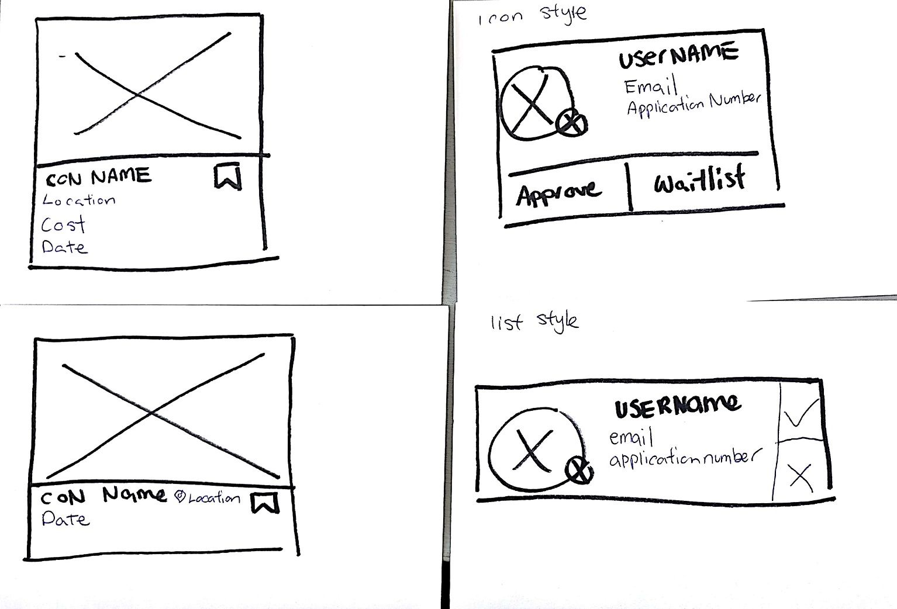
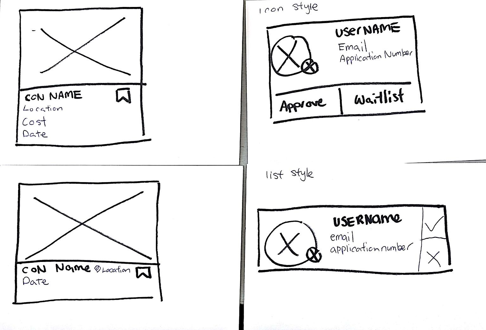
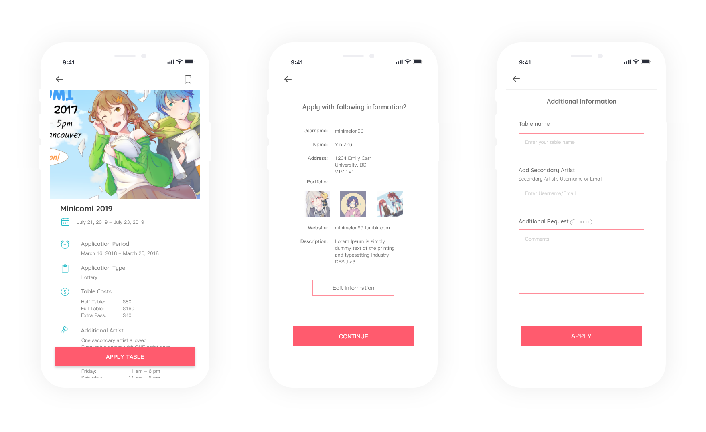

Process

I started the project by interviewing several artists and organizers. I created an affinity map with the information that I obtained from them
Persona
I started the project by interviewing several artists and organizers. I created an affinity map with the information that I obtained from them
Information Architecture

I made an information architecture to layout the structure of the website.
Storyboard

I drew out the scenerio storyboard of what I want the user to go through as an end result of this platform.
Wireframes


 

I drew out paper wireframes on Q cards and user tested them for initial feedback. For the most part, the flow was good, but there was information that users were looking for at certain stages that I missed
Must have, good to have & optional
After sorting out the information that artists and organizers want, I asked them to rank the information into:
1. Must have
2. Good to have
3. Optional
I then sorted out the information being a logistic information that they need to know, and general information about the con
Static & Dynamic information

For the artist information that organizers need, I split them into two categories, the static and the dynamic information
Static Information being the information that never changes. Things like name, address, portfolio, website. All organizers need this information, and the user should not have to repeatedly input this information
Dynamic Information being the information that changes. Who your table partner is and what your table name will be is always something that constantly gets changed
Mobile
Application is also on mobile view as a lot of artists has other jobs in the service industry, and cannot easily access a computer. However, when I did my initial interviews, many artists would not apply for an application through their phones due to the fear of making mistakes.
Accessibility
Half way through the project, I learned about designing for accessibility, and realized that none of my colors passed accessibility criterias. I changed the colors that didn't pass the WCAG AA guidelines. The improved contrast ratio made the overall design better.